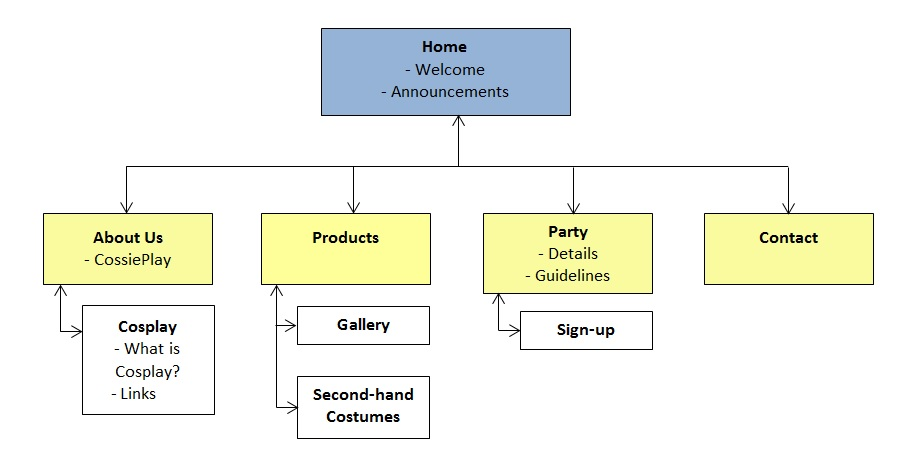

Name: Soh Jin Ann, Anne
Login: jc449669
This website’s purpose is to increase revenue for the business CossiePlay by promoting its products and services to a client base of teens and young adults, soliciting them to sign up for monthly parties and to contact the business to place costume orders.
Increased number of monthly party attendants and weekly costume orders. All other advertising other than the website will remain consistent for three months after its launch. In those three months, increase in monthly party attendance and weekly costume orders beyond the current numbers of about 30 and 4 respectively will indicate the website’s success.
Local high school kids and young adults, from age 14 to 30.
The site will be designed for users familiar with technology, with streamlined navigation that is quickly familiarisable. Focus over unnecessary clutter will be implemented, as with the navigation bar's links and with not overly lengthy content.
The site will target youth whose creativity and imagination draw them to cosplay by using brighter, vivid colours to highlight key areas in balance with more neutral colours used for the rest of the site.
Additionally, the site’s call-to-actions will not be too ‘in-your-face’, keeping in mind frequent exposure of the technology generation to websites which urge them to buy/subscribe/share. The flow of the site will direct the audience to and focus on the two main pages of interest- products (costumes) and party, via the navigation bar and home page.
 ...